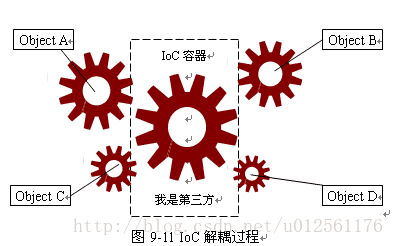
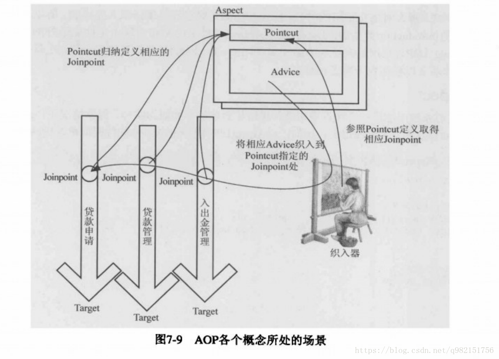

一、DI(依赖注入)和IOC(控制反转)
Spring的三大思想为DI(依赖注入)，IOC(控制反转)，AOP（面向切面编程）。既然在学Spring就认真学一些思想，而不是仅仅停留在复制粘贴CURD的层面，这也许就是码农的自我修养吧。
1.1、万物初始
既然大家都没有女朋友，那今天kitty萌新教教大家怎么new女朋友吧。
假如你有了一个女朋友，，，，类
public class GirlFriend{
String name; //有名字
Face face;
Head head; //有头有脸的意思
....... //其他一堆优点
GirlFriend(String name)
{
this.name=name;
}
}那么现在你是一个成功人士，即将走上人生巅峰，是不是还有一 点小激动呢
public class Person{
Person(){
//给你女朋友加属性
GirlFriend girlFriend=new GirlFriend("迪丽热巴");
Car car=new Car("兰博基尼");
House house=new House("海景套房"); //有车有房
}
}Person you;
//当你需要你女朋友的时候你可以这样
you.girlFriend;
//比如当别人问你女朋友谁啊，你可以回答
printf("%s",you.girlFriend.name);直到一天，你和你女朋友的缘分尽了，经历一段痛心肺腑的分手诀别后，你找到了新的女朋友雏田小姐姐，当然这个时候将会有数百句渣男，臭鸡蛋扑面而来，但是，嘻嘻，你还是要更新你女朋友的名字。那么你要怎么做呢？
你要把Person类里GirlFriend的构造参数改一下
GirlFriend girlFriend=new GirlFriend("日向雏田");
这个时候你会发现你是全世界最成功的人士，但是等等你可能忽略了一个问题，因为你换女朋友，你自己的类改变了(person类改变了)，你不再是那个打娘胎里出来的那个单纯的Person,而是人工改造后的你，这样的你是没有灵魂的，这是因为，你依赖于你女盆友（Person类依赖于GirlFriend）,这样你和你女朋友的耦合性太强了（Person类和GirlFriend耦合性强），那么依赖注入就是为了解决一下这个问题。
1.2、控制反转和依赖注入（正经脸）
以下来自百度百科
控制反转（Inversion of Control，缩写为IoC），是面向对象编程中的一种设计原则，
可以用来减低计算机代码之间的耦合度。其中最常见的方式叫做依赖注入（Dependency
Injection，简称DI。通过控制反转，对象在被创建的时候，由一个调控系统内所有对象
的外界实体，将其所依赖的对象的引用传递给它。也可以说，依赖被注入到对象中。是不是很晕，听不懂，如果你懂了，请直接跳过本博客，如果没看懂，请继续听我吹逼。
其实意思还是很简单的，就是为了解除Person和GirlFriend的耦合，在修改GirlFriend.name的同时不修改Person类，能不能做到呢，答案是肯定的
class Person{
GirlFriend girlFriend;
Person(GirlFriend girlFriend){
this.girlFriend = girlFriend;
};
.........
}这样就算你要天天换女朋友，又能保持自己的灵魂，你只要
GirlFriend girlFriend=new GirlFriend("日向雏田");
Person you= new Person(girlFriend);字面意思就是将你女朋友注入到你中（为什么听起来优点别扭），这是通过构造函数依赖注入,而依赖注入有3种方式
分别为构造方法注入，setter注入，基于注解的注入。
思想和构造方法注入是一致的，比如
setter函数注入：
其实也就是在Person中另外写一个函数来替代构造函数，然后在new person够调用这个函数。
class Person{
GirlFriend girlFriend;
SetGirlFriend(GirlFriend girlFriend){
this.girlFriend = girlFriend;
};
}
Person you=new Person();
GirlFriend girlFriend=new GirlFriend("日向雏田");
you.SetGirlFriend(girlFriend)基于注解的注入：
注解我看来就是为了加快人生进步发展（为了让后人偷懒），而定义的一些约定注释，提高我们的编程体验。
看一看spring有哪些关于注入的注解
- @Component注解：表明当前类为一个组件（bean）
- @Value注解：为bean注入值
- @Autowired注解 ：为bean注入其他bean（byType方式）
- @Qualifier注解：与Autowired注解联用实现byName方式注入
- @Resource注解：这个不是Spring提供的注解，这个是jdk提供的注解，要求jdk版本1.6以上，这个注解可以实现Autowired和Resource的功能。当直接注解@Resource时起到Autowired功能（byType），当加上参数@Resource（name=”“）的时候，起到@Autowired和@Qualifier联合使用的功能（byName）
当你能看到这里的时候，自然就会去学习注解的详细使用，这里只唠唠思维，就不展开。
控制反转名字由来：
对象A获得依赖对象B的过程,由主动行为变为了被动行为，控制权颠倒过来了，这就是“控制反转”这个名称的由来，其实就是通过IoC容器来关联这些对象类。这样对象与对象之间就通过IoC容器进行联系，但对象与对象之间并没有什么直接联系。在上面例子中，就是可以新建一个工厂类，专门生产女朋友的，然后你要什么女朋友通过调用女朋友工厂生产后再注入。

二、AOP（面向切面编程）
先来一个官方书面表述：
AOP（Aspect Oriented Programming）意为：面向切面编程，通过预编译方式和运行期动态代理实现程序功能的统一维护的一种技术。AOP是OOP的延续，是软件开发中的一个热点，也是Spring框架中的一个重要内容（Spring核心之一），是函数式编程的一种衍生范型。利用AOP可以对业务逻辑的各个部分进行隔离，从而使得业务逻辑各部分之间的耦合度降低，提高程序的可重用性，同时提高了开发的效率。
（反正我第一遍是看不懂的）
2.1、面向切面是面向啥玩意：
我们先抛开Spring对于AOP的事件机制，单纯说一说面向切面编程，切面其实就是一些切面性问题的受力点，也叫横切性问题即和主业务逻辑无关，散落四方的一些方法。比如日志记录，效率检查，时间记录等等。
比如再次回到女朋友问题，假如一位情场高手打算出一本泡妞宝典，所以打算在每个女朋友追求到手后记录下经验，然后写入宝典，现在需求就是在确认关系上添加记录经验,所以现在是这样的：
认识女朋友1—>相遇—>追求—>确认关系—>分手
认识女朋友2—>相遇—>追求—>确认关系—>分手
认识女朋友3—>相遇—>追求—>确认关系—>分手
认识女朋友4—>相遇—>追求—>确认关系—>分手
|👇|
|总结经验|
再回到AOP编程思想中，由于总结经验对于每一场恋爱的主线没有直接关系，最多是人品问题（天地良心，我个人不是这样水性杨花的），所以可以把确认关系当一个切面，而横切的问题就是总结经验。在编程上，如果每个业务的横切问题单独编程就会产生大量的垃圾代码，所以采用AOP能够在编程上可以大大减少你的时间
2.2、Spring的AOP具体概念（比较硬核）
这里还是先给出一个比较专业的概念定义：
- Aspect（切面）： Aspect 声明类似于 Java 中的类声明，在 Aspect 中会包含着一些 Pointcut 以及相应的 Advice。
- Joint point（连接点）：表示在程序中明确定义的点，典型的包括方法调用，对类成员的访问以及异常处理程序块的执行等等，它自身还可以嵌套其它 joint point。
- Pointcut（切点）：表示一组 joint point，这些 joint point 或是通过逻辑关系组合起来，或是通过通配、正则表达式等方式集中起来，它定义了相应的 Advice 将要发生的地方。
- Advice（增强）：Advice 定义了在 Pointcut 里面定义的程序点具体要做的操作，它通过 before、after 和 around 来区别是在每个 joint point 之前、之后还是代替执行的代码。
- Target（目标对象）：织入 Advice 的目标对象.。
Weaving（织入）：将 Aspect 和其他对象连接起来, 并创建 Adviced object 的过程
（放弃吧，光看是看不懂的，去撸代码吧）

本文只想通过简单的例子讲讲思想，具体代码就不涉及了，感兴趣可以另学，另外本文旨在于学习，本人从未参与里面任何事件逻辑，感谢迪丽热巴和雏田小姐姐的友情赞助照片。